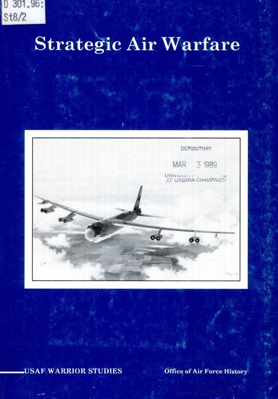
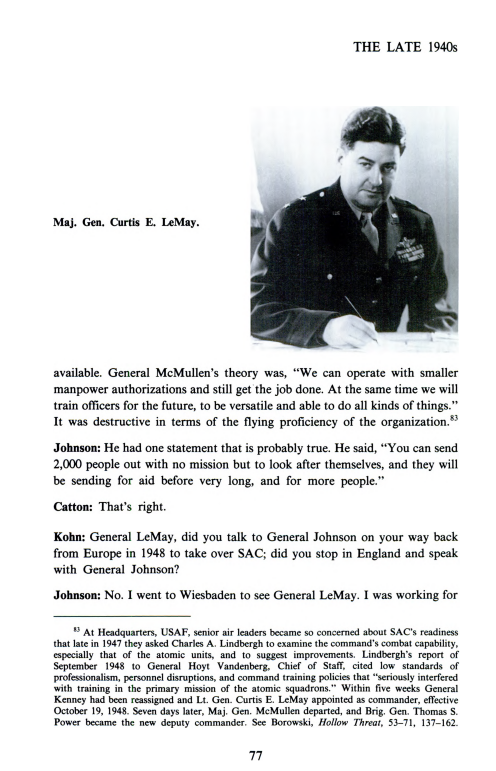
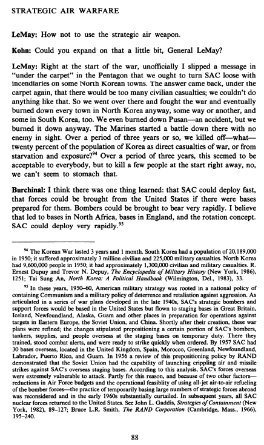

커티스 르메이 장군

콘: 르메이 장군님, 그 점에 대해 좀 더 자세히 설명해 주시겠습니까?
르메이: 전쟁이 시작되자마자, 저는 비공식적으로 펜타곤에 “뒷문으로” 메시지를 슬쩍 전달해, 전략공군사령부(SAC)가 북한 일부 마을에 소이탄을 마음껏 투하하도록 허용해야 한다고 제안했습니다. 답변은 다시 ‘비공식적으로’ 돌아왔는데, 민간인 사상자가 너무 많을 것이니 그런 일은 할 수 없다는 것이었습니다. 그래서 우리는 그곳으로 가서 전쟁을 치렀고, 결국 어떤 식으로든 북한 내 모든 도시를 불태워 버렸으며, 남한의 일부 도시도 마찬가지였습니다. 우연히 부산까지 불태워 버리기도 했지만, 어쨌든 불태워 버린 셈이죠. 해병대는 적의 흔적조차 보이지 않는 그곳에서 전투를 시작했습니다. 약 3년 동안, 우리는 한국 인구의—얼마나 되던가, 20퍼센트나 되는 사람들을 전쟁의 직접적인 희생자로, 혹은 굶주림과 추위로 죽게 만들었습니다. 3년이라는 기간 동안 이는 모든 사람에게 용납될 수 있는 일로 여겨졌지만, 전쟁 초기에 몇 명을 즉시 죽이는 것은, 아니, 우리는 도저히 참을 수 없는 일인 듯합니다.
Translated with DeepL.com (free version)
Kohn, R. H., & Harahan, J. P. (1988). Strategic Air Warfare: An Interview with Generals Curtis E. LeMay, Leon W. Johnson, David A. Burchinal, and Jack J. Catton., Office of Air Force History, U.S. Air Force. p.88.
옛날엔 도쿄핫 밈으로 소비됐는데 6.25 전쟁(한국전쟁) 폭격 사실이 조명되자 밈이 사라짐
전쟁이 존나 무섭다는 걸 실감한다
르메이 장군 밈이 사라졌었음?